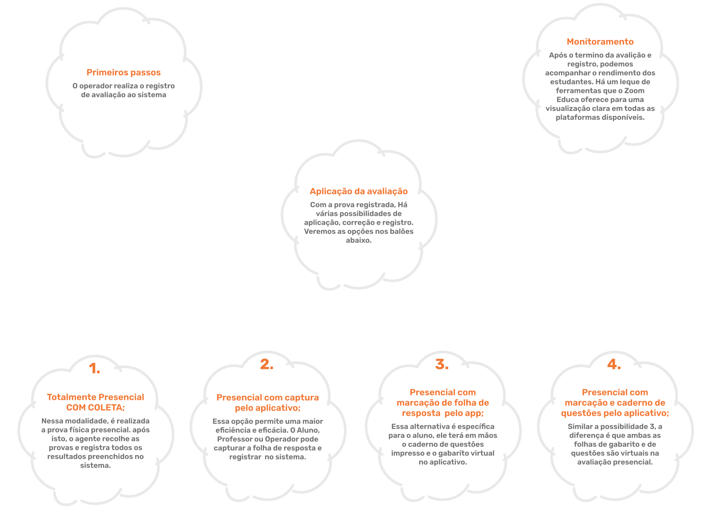
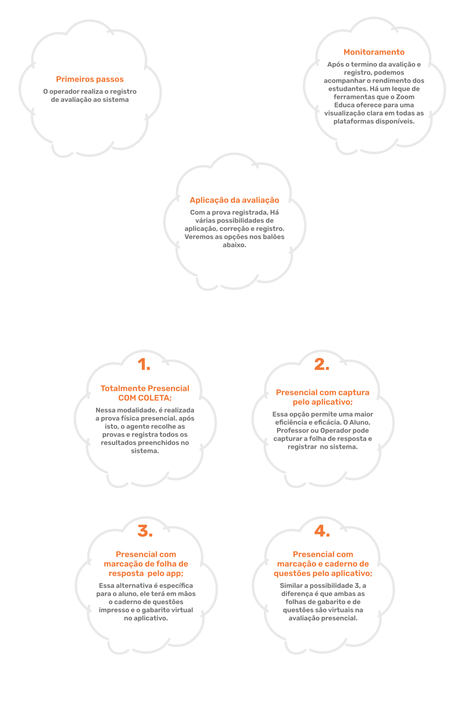
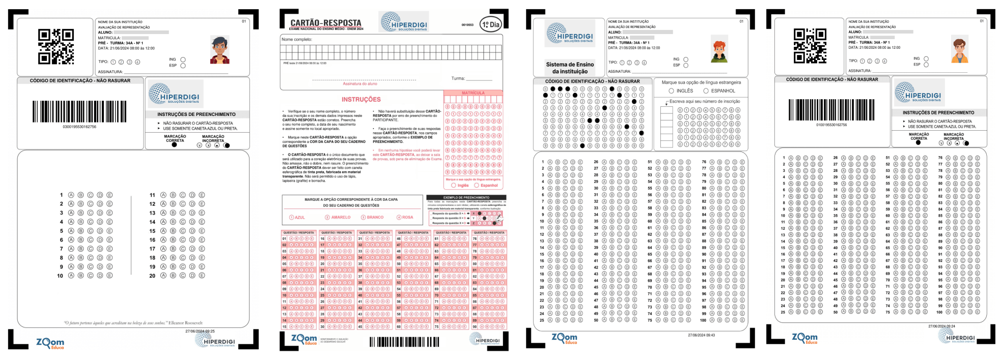

Instituições que utilizam o Zoom Educa


Como o fluxo é realizado?
Acompanhe o mapa para entender como o Zoom Educa vai atuar na sua instituição de ensino.



Conheça nosso Sistema
Plataforma WEB
Plataforma MOBILE
Funcionalidades

Avisos personalizados
Permite que o operador emita avisos para um perfil selecionado, seja aluno ou professor. O professor também pode emitir avisos aos alunos.
Provas online
Podem ser realizadas provas online pela plataforma.
Registro de atividades
O professor pode realizar o registro de atividades para os alunos.

Visualização por gráficos e médias
O carro-chefe da plataforma está na visualização dos gráficos de desempenho, sendo o mais detalhado possível para exibir bem as informações do aluno, turma e séries.

Folhas de respostas Personalizadas
O zoom Educa cria folhas de respostas personalizadas para sua instituição, com informações da escola e do aluno .
Novidades que facilitam e aumentam sua produtividade
Com o aplicativo móvel, é possível agilizar processos de maneira fácil e eficiente.

Captura de folhas de respostas
A funcionalidade permite que o operador capture e envie folhas de respostas diretamente pelo celular, usando o aplicativo. Com essa ferramenta, as respostas são registradas rapidamente e enviadas à plataforma, onde são corrigidas automaticamente. Isso agiliza o processo de avaliação e fornece feedback imediato sobre o desempenho dos estudantes, contribuindo para o monitoramento contínuo e detalhado do rendimento escolar.
Prova Presencial Digital
A funcionalidade permite que os alunos realizem suas avaliações de forma flexível e adaptada a diferentes necessidades. Com essa funcionalidade, o aluno pode responder por duas modalidades: Híbrido (usando caderno físico) ou Digital (respostas diretamente pelo celular ou tablet).


Correção de redações
Esta ferramenta possibilita que professores corrijam redações de maneira prática e detalhada diretamente pelo celular. Na área de redação, o professor visualiza as imagens das redações que ele mesmo registra no sistema e pode inserir comentários em trechos específicos, usando marcações na própria imagem para destacar pontos importantes ou sugerir melhorias. Além disso, é possível atribuir uma nota geral à redação, tornando o processo de feedback mais interativo e preciso, e facilitando o acompanhamento do progresso dos alunos.
O que cada perfil pode fazer?
Descubra o que se pode fazer com cada perfil
Pais
Através do Zoom Educa os pais podem acompanhar o rendimento escolar de todos os seus filhos através do próprio celular.
Eles poderão acessar o desempenho individual do seu filho em cada disciplina por simulado. Poderão ainda consultar histórico de desempenho para saber em que disciplinas o aluno está indo bem e em quais precisa melhorar.
O Zoom Educa possui uma espécie de indicador de “comportamento” do aluno que avisa aos pais qualquer mudança abrupta no rendimento do seu filho, através de notificações pelo celular.
Alunos
O aluno poderá responder provas objetivas e discursivas de forma online e presencial.
As folhas de respostas geradas pelo Zoom Educa, na modalidade presencial, são personalizadas com dados do aluno, com foto e Qr Code para a identificação de cada aluno e podem podem ser impressas em papel A4 comum para posterior escaneamento e envio para o Zoom Educa.
As folhas de respostas podem ser impressas no modelo de qualquer sistema de ensino ou mesmo do ENEM.
Professor
O professor é um dos principais beneficiados com um módulo próprio, no qual ele tem acesso a uma série de informações, a cada simulado, através do app, tais como: percentual de acertos de cada questão, percentual de marcação de cada alternativa, alunos com mais dificuldade em cada questão, rendimento da turma e disciplinas, pontuação dos alunos, recebe indicadores automáticos de rendimento, possibilidade de inserir, via app, mini-aulas ou explicações sobre as questões com menos acertos, onde somente alunos que erraram a questão receberão a notificação, etc.
Diretor
O diretor pode ter uma visão geral do rendimento de sua escola e visões detalhadas sobre o rendimento de cada série, turma, professor e disciplina.
Ele tem acesso a gráficos comparativos que mostram que professores e turmas estão tendo um desempenho bom ou ruim.
Com base nestas informações, a direção poderá tomar decisões estratégicas para melhorar ainda mais o índice de aprovação de sua escola no Enem e melhorar ainda o processo ensino-aprendizagem como um todo em sua escola.
Coordernador
Para o coordenador, o zoom educa permite que o processo seja automatizado e o mesmo tenha o controle de tudo via web.
O coordenador pode, além de gerenciar todo o processo do simulado desde a sua criação até o resultado final, ele pode, principalmente, acompanhar o rendimento de cada série e cada turma como um todo, cada professor, cada disciplina e cada aluno individualmente.
O Zoom Educa faz uso de indicadores de rendimento, que permitem a emissão de avisos importantes ao coordenador, para que este possa identificar facilmente problemas pontuais e intervir de forma eficaz para melhorar rendimentos ruins, sejam eles de professores, alunos ou da turma como um todo.
Benefícios para sua Instituição
Permite o diagnóstico da real situação acadêmica e a execução de estratégias e ações planejadas, com base na análise dos indicadores apresentados pela ferramenta ao longo do ano;
Proporciona redução de custos, pois substitui a leitora óptica, formulários pré-impressos e software de correção;
Possibilita o reconhecimento de pontos fortes e fracos, auxiliando alunos, professores e equipe gestora a explorarem suas potencialidades;
Favorece a redução da reprovação e evasão escolar, por meio de ações direcionadas às demandas de cada aluno;
Possibilita a identificação das competências a desenvolver, de acordo com as particularidades dos alunos;
Perguntas Frequentes
Algumas boas perguntas importantes sobre a plataforma
A responsabilidade pela criação e fornecimento das avaliações é da própria instituição. A nossa plataforma não se envolve nesse processo, mas tem o objetivo de facilitar o ciclo completo de aplicação das provas. Isso inclui a correção automática, visualização de resultados e monitoramento do desempenho, tudo de forma ágil e eficiente.
Além da aplicação e correção de provas, O Zoom Educa proporciona recursos para monitorar o progresso acadêmico dos alunos ao longo do tempo. A plataforma oferece relatórios detalhados sobre as tendências de desempenho, permitindo que educadores e gestores ajustem a abordagem pedagógica de acordo com os resultados obtidos.
A correção das avaliações é feita de forma automática pela plataforma, utilizando algoritmos avançados para garantir precisão e rapidez. Assim que o aluno submete a prova, o sistema corrige as questões objetivas de maneira instantânea, fornecendo os resultados em tempo real.